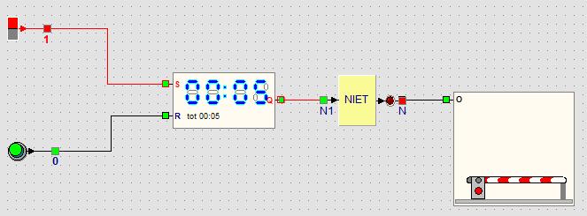

Lernpfad › Fortgeschrittene › Lektion 22 von 22

Ein Druck auf die Tickettaste setzt die Stoppuhr auf 00:00. Solange die Zeit läuft, ist Q aus und der Ausgang des NICHT-Gatters ein: Die Schranke öffnet sich. Nach 5 Sekunden ist die Endzeit erreicht: Q geht an, das NICHT-Gatter geht aus und die Schranke schließt wieder. Die Stoppuhr bleibt auf 00:05 stehen, bis das nächste Auto auf die Taste drückt.
Das ist dieselbe Idee wie eine Treppenhausbeleuchtung: ein Druck auf die Taste, und nach einer Zeit geht das Licht von selbst aus.
Ein Lastwagen braucht mehr Zeit. Lassen Sie die Schranke 10 Sekunden offen.
Stoppen Sie die Simulation, entsperren Sie die Stoppuhr und wählen Sie mit der rechten Maustaste Bis 00:10.
Lassen Sie eine Lampe leuchten, wenn die Schranke ganz offen ist, damit der Fahrer weiß, dass er weiterfahren darf.
Rechtsklick auf die Schranke und Endschalter setzen wählen. Es kommen zwei Endschalter dazu: Zu und Auf. Verbinden Sie den Ausgang des Endschalters Auf mit einer Lampe.
An der Ausfahrt gibt es eine zweite Taste. Auch sie soll die Schranke öffnen.
Setzen Sie einen zweiten Taster und ein ODER-Gatter auf das Panel. Verbinden Sie beide Taster mit den Eingängen des ODER-Gatters und den Ausgang des ODER-Gatters mit R der Stoppuhr. Jetzt setzt jede Taste die Zeit auf 00:00.